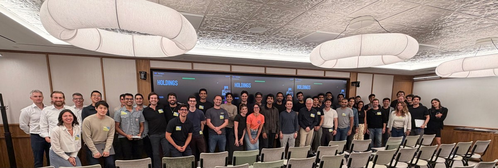

Executive Summary
Thrive Holdings가 새로 조달한 20억 달러는 AI 스타트업이 아니라 동네 회계법인과 IT 서비스 회사를 사는 데 쓰입니다. 이번 조달로 기업가치는 120억 달러가 됐고 소프트뱅크와 D1 캐피털 파트너스, 알티미터 캐피털이 들어왔습니다. 플랫폼에 올라온 회사는 이미 70곳을 넘었습니다.
회계 부문 Current가 OpenAI와 함께 만든 세무 신고 에이전트는 신고서 7,000건 이상을 98% 정확도로 처리했습니다. 같은 발표에서 회사는 현장 업무와 현지 판단, 전문가 서명은 AI가 대체하지 않는다고 못박았습니다. 두 문장을 나란히 놓으면 나머지 2%를 누가 언제 찾아내는가라는 질문이 남습니다.
질문을 데이터 실사 쪽으로 옮겨 보면 답이 어디에 있는지가 보입니다. 정확도를 재려면 정답이 있어야 하고, 회계에서 그 정답은 인수한 법인들이 수십 년간 쌓아 둔 신고서와 서명 이력 안에 있습니다. 롤업의 배수가 갈리는 자리도 대개 거기입니다.
주요 수치
앞의 두 숫자는 이 전략이 지금까지 만든 규모와 성과이고, 뒤의 두 숫자는 그 성과가 값으로 바뀌려면 통과해야 하는 관문입니다.
출처: TechCrunch (2026-08-12), The Finance Story
70곳 이상
플랫폼에 올라온 회사
회계 50곳 이상, IT 20곳 안팎
36배
헬프데스크 해결 시간 단축
IT 부문 Shield 기준
최소 140건
98%가 남긴 나머지 2%
7,000건으로 환산, 오류 정의는 미공개
4~6배 → 7~10배
회계법인 EBITDA 배수
전통 법인과 PE 플랫폼의 거래 구간
20억 달러가 산 것은 회사 70곳이다
Thrive Holdings는 조슈아 쿠슈너의 Thrive Capital에서 갈라져 나온 지주회사입니다. AI를 만들어 파는 대신 AI를 심을 회사를 사들입니다. 회계 부문 Current에는 회계법인 50곳 이상과 전문가 2,000명 이상이 모여 있고, IT 서비스 부문 Shield에는 20곳 안팎이 들어와 있습니다. Current의 전신은 2023년 출발한 Crete Professionals Alliance입니다.

새로 받은 자금의 일부는 세 번째 축으로 갑니다. 건물과 인프라 같은 물리적 자산에 붙는 규제 대응 서비스입니다. 회계와 IT를 먼저 고른 이유는 업계에서 흔히 꼽는 조건과 겹칩니다. 처리량이 많고 규칙이 정해져 있으며 결과가 문서로 남습니다. 그리고 이런 회사가 파는 상품은 결국 사람의 시간이라, 처리 시간이 줄면 마진이 곧바로 움직입니다.
여기까지는 전형적인 사모펀드 롤업과 다르지 않습니다. 달라지는 지점은 인수와 함께 넘어오는 물건입니다. 회계법인 한 곳을 사면 고객 명부와 인력만 오는 것이 아니라, 그 법인이 몇 년에 걸쳐 만든 신고서와 조서, 검토 메모, 수정 이력이 함께 옵니다. IT 회사를 사면 헬프데스크 티켓과 응대 기록이 옵니다. 인수 계약서에 자산으로 적히는 항목은 아니지만, 업무를 대신할 에이전트를 만들고 그 결과가 맞는지 확인하는 재료는 그쪽에 있습니다.
같은 소프트웨어를 밖에서 사다 붙이는 회사와 이 구조의 차이도 거기서 생깁니다. 밖에서 산 도구는 이 법인이 지난해 어떤 고객의 어떤 항목에서 무엇을 놓쳤는지 모릅니다. 70곳을 한 지붕 아래 모으면 그 기록이 한곳에 쌓이고, 쌓인 기록은 다음 자동화의 학습과 검증 재료가 됩니다. 사들인 것을 회사라고 부르든 업무 기록이라고 부르든, 값이 붙는 쪽은 후자에 가깝습니다.
OpenAI가 받는 대가는 지분이다
2025년 12월 OpenAI는 Thrive Holdings의 지분을 가져갔습니다. 조건은 공개되지 않았고, 포트폴리오 회사의 성과에 따라 그 지분이 커지는 구조로 알려졌습니다. 대신 OpenAI는 자기 직원을 포트폴리오 회사 안으로 보내 제품을 만들고 시스템을 심습니다. 응용연구를 총괄하는 보리스 파워는 Thrive Holdings 쪽 직책을 함께 맡고 있습니다. 세무 신고 에이전트도 OpenAI의 코딩 에이전트 Codex를 써서 양쪽이 함께 만들었습니다.
소프트웨어 회사가 좌석 수나 호출 건수로 돈을 받는 방식과는 계산이 다릅니다. 고객사가 실제로 더 벌어야 파는 쪽도 법니다. 그러면 모델이 현장에서 얼마나 맞히는지가 매출 지표가 되고, 그 확인은 고객사의 업무 기록 위에서만 가능합니다. 회계법인 50곳이 매년 만드는 신고서는 이 구조에서 평가 데이터의 역할을 겸합니다.
같은 형태의 거래가 여럿입니다. OpenAI는 TPG와 브룩필드, 베인 캐피털이 받치는 The Deployment Company와도 엮여 있고, 앤스로픽은 Ode를 통해 비슷한 자리를 잡았습니다. 제너럴 캐탈리스트는 회계법인 Accrual을 포함해 전문 서비스 회사를 직접 사들이는 조직을 만들었습니다. 모델을 파는 경쟁이 업무를 사는 경쟁으로 옮겨 가고 있다고 읽어도 무리가 없습니다.
비판도 같이 나왔습니다. Thrive Capital이 양쪽에 지분을 걸치고 OpenAI 인력이 안에 들어가 있는 구조에서는, 성과가 시장의 수요에서 나온 것인지 내부 지원에서 나온 것인지 밖에서 가리기 어렵다는 지적입니다. 회사 쪽은 채워지지 않은 수요가 분명히 있었고 여러 포트폴리오 회사가 먼저 AI 도구를 찾고 있었다고 반박했습니다. 어느 쪽 말이 맞는지는 결국 숫자로 갈리는데, 맨 앞에 놓인 숫자가 98%입니다.
98%가 말하지 않는 140건
발표된 성과는 세 가지입니다. 세무 신고 7,000건 이상 처리, 정확도 98%, 참여 법인의 신고 준비 시간 30% 이상 단축. IT 쪽에서는 헬프데스크 해결 시간이 36배 빨라졌고 최근 한 달 사이 배포한 맞춤형 에이전트 수가 두 배가 됐습니다. 처리량과 속도만 놓고 보면 자동화가 먹힌 사례입니다.
나머지 2%를 건수로 바꾸면 140건입니다. 7,000건이 하한이므로 실제로는 그보다 많습니다. 그런데 이 계산에는 확인되지 않은 전제가 하나 있습니다. 98%의 분모가 공개되지 않았습니다. 신고서 한 건을 통째로 맞혔는지 세는 것과, 신고서 안의 항목 하나하나를 맞혔는지 세는 것은 전혀 다른 숫자입니다. 신고서 한 건에 항목이 수백 개라면 항목 정확도 98%는 사실상 모든 신고서에 오류가 있다는 뜻이 됩니다.
회사가 같은 자리에서 현장 업무와 현지 판단, 전문가 서명은 AI가 대체하지 않는다고 말한 것은 이 대목과 붙여 읽을 만합니다. 세무 신고서에 이름을 올리는 회계사는 법적 책임을 집니다. 그 사람이 서명하려면 무엇이 맞고 무엇이 틀렸는지 확인해야 하는데, 정확도가 98%라는 사실 자체는 그 확인 부담을 줄여 주지 않습니다. 틀린 140건이 어느 건인지 표시되지 않는다면 검토 대상은 여전히 7,000건입니다.
검증 노동은 사라진 것이 아니라 자리를 옮겼습니다. 예전에는 신고서를 만드는 데 시간이 들었고 지금은 만들어진 신고서를 살피는 데 시간이 듭니다. 준비 시간이 30% 줄었다는 수치는 이 이동을 감안한 값일 수도 있고 아닐 수도 있는데, 발표만으로는 알 수 없습니다.
검토 시간을 실제로 줄이는 것은 정확도를 한 자리 더 올리는 일이 아니라 오류가 어디에 몰리는지를 아는 일입니다. 신고 유형별, 고객 규모별, 항목별로 오류율을 쪼갤 수 있으면 사람이 볼 범위가 좁아집니다. 그러려면 처리 이력이 정답과 짝을 이룬 채 남아 있어야 합니다. 무엇이 최종 제출본이었는지, 사람이 어디를 고쳤는지, 왜 고쳤는지가 기록에 있어야 오류 지도를 그릴 수 있습니다. 이런 이력을 갖춘 법인과 갖추지 못한 법인은 같은 값에 살 수 있는 회사가 아닙니다.
배수는 매각 단계에서 갈린다
롤업의 수익 구조는 단순합니다. 작은 회사를 낮은 배수에 사서 묶고, 묶인 덩어리를 높은 배수에 팝니다. 회계업에서 그 구간이 어디쯤인지는 대체로 알려져 있습니다.
구간을 가르는 것은 회사의 크기가 아닙니다. 같은 이익을 내는 법인이라도 성장세가 어떤지, 묶은 뒤에 하나로 굴러갈 것처럼 보이는지에 따라 값이 달라집니다. 아래위 구간의 차이는 대략 두 배이고, 롤업이 노리는 차익도 그 간격 안에 있습니다.
| 유형 | EBITDA 배수 |
|---|---|
| 중견 전통 회계법인 | 4~6배 |
| 성장형 인수 대상 | 6~8배 |
| 상위권 법인·사모펀드 플랫폼 | 7~10배 |
Firmlever 데이터 인용. 출처: The Finance Story
AI가 붙으면 기대치가 한 단계 더 올라갑니다. 2026년 AI 롤업 투자자 설문에서 응답자 102명 가운데 90% 이상이 EBITDA 2배, 그러니까 100% 이상의 개선을 유효한 기준으로 꼽았습니다. 본사 통합이나 관리비 중앙화 같은 전통적 수단이 통상 10~15%를 만든다는 점을 감안하면, AI 롤업은 기존 롤업과 다른 종류의 약속을 하고 있는 셈입니다.
그 약속이 매각 단계에서 어떻게 갈리는지는 최근 사례 둘이 보여 줍니다. 영국·아일랜드 회계법인 122곳을 묶은 Xeinadin은 매출 1억 파운드 이상, EBITDA 6,000만 파운드 규모로 10억 파운드짜리 매각을 추진했습니다. 2022년에 들어온 Exponent가 겨냥한 값은 15~16배였는데, 그 값을 내겠다는 매수자를 찾지 못하고 있습니다. 반대편에는 Citrin Cooperman이 있습니다. New Mountain Capital이 2021년에 약 11배로 사서 2025년 블랙스톤에 20억 달러, 약 15배로 넘겼습니다.
매수자들이 두 경우를 가른 질문은 통합 여부였습니다. 진짜 하나로 굴러가는 사업인지, 아니면 회사를 모아 둔 목록인지입니다. 그리고 통합됐다는 주장을 밖에서 확인하는 방법은 결국 측정입니다. 인수 전과 후를 같은 지표로 재서 보여 줄 수 있어야 합니다.
같은 지표로 잰다는 말은 생각보다 무겁습니다. 법인 50곳이 저마다의 계정과목 체계를 쓰고 신고서와 조서를 저마다의 형식으로 보관해 온 상태라면, 인수 전 원가와 인수 후 원가를 같은 기준에 올리는 일부터 품이 듭니다. 서로 다른 체계를 표준 항목으로 맞추지 못한 채로는 자동화가 실제로 마진을 얼마나 밀어 올렸는지 계산할 근거 자체가 없습니다. 배수가 무너진다면 AI가 작동하지 않아서가 아니라 작동했다는 사실을 증명하지 못해서일 가능성이 큽니다.
실사 목록에 업무 기록이 없다
AI 롤업 실무자들이 참고하는 플레이북은 인수할 업종을 고르는 기준으로 여섯 가지를 듭니다. 파편화된 소유 구조, 노동집약적 운영, 자동화 여지, 반복되는 현금흐름, 고령의 소유주, 잘 떠나지 않는 고객입니다. 여섯 항목 모두 시장 구조에 관한 것이고, 그 회사의 업무 기록이 어떤 상태인지를 묻는 항목은 없습니다.
회계나 규제 대응처럼 틀렸을 때 비용이 큰 영역에서는 이 자리가 비어 있으면 곤란합니다. 데이터 실사 항목으로 옮겨 적으면 다음 정도가 됩니다.
- 최근 3년치 산출물이 같은 형식으로 검색되는가, 아니면 담당자별 폴더에 흩어져 있는가
- 최종 제출본과 중간본이 구분되는가. 정답 세트가 되는 쪽은 최종본이다
- 수정 이력에 누가 무엇을 왜 고쳤는지가 남는가
- 고객사마다 다른 예외 규칙이 문서로 있는가, 아니면 오래된 담당자의 기억에만 있는가
네 항목 모두 자동화의 성능이 아니라 검증의 가능성을 묻습니다. 앞의 두 개가 없으면 에이전트의 출력을 무엇과 비교할지 정할 수 없고, 뒤의 두 개가 없으면 오류가 왜 났는지 되짚을 수 없습니다. 인수 대상 명단을 놓고 배수를 흥정하는 자리에서 이 네 줄의 답은 대개 확인되지 않습니다.
차이는 앞에서 본 140건에서 드러납니다. 이력이 갖춰진 법인이라면 그 140건이 어떤 신고 유형과 어떤 항목에 몰렸는지 나중에라도 확인되고, 다음 해에 사람이 볼 범위가 좁아집니다. 갖춰지지 않은 곳에는 98%라는 숫자만 남고, 검토 범위는 해마다 전체로 돌아갑니다. 같은 에이전트를 심어도 두 법인이 같은 값을 받을 수 없는 이유가 여기에 있습니다.
같은 문제가 다른 얼굴로 나타난 사례도 있습니다. AI 네이티브 회사를 인수할 때 학습 데이터의 출처와 소유권이 부채로 돌아오는 구조는 AI 인수 실사에 등장한 숨은 데이터 부채에 정리했고, 파일럿이 운영 단계에서 멈추는 이유를 데이터 쪽에서 본 글은 모델은 멀쩡했다입니다.
Editor's Note: 페블러스가 AI-Ready Data를 말할 때 데이터에 붙어 있어야 한다고 보는 것이 이런 항목입니다. 적힌 값이 맞는지만 확인해서는 그 데이터로 무엇을 검증할 수 있는지 알 수 없고, 최종본 여부와 수정 이력이 레코드에 남아 있어야 뒤늦게라도 오류 지도를 그릴 수 있습니다. 인수 가격에 이 상태가 반영되는 시점이 곧 업무 기록이 자산으로 계산되는 시점입니다.
참고문헌
1차 소스
- 1.TechCrunch. (2026-08-12). "OpenAI-backed Thrive Holdings raises $2B to bring AI to the enterprise."
- 2.TechCrunch. (2025-12-01). "OpenAI's investment into Thrive Holdings is its latest circular deal."
업계·시장 소스
- 3.The Finance Story. (2026). "Private Equity Bets on Accounting Roll-Ups Are Hitting a Reality Check."
- 4.Tenet. (2026). "AI Roll-up Investor Sentiment Report 2026." AI Roll-up Nexus.
- 5.Capital Founders OS. (2026). "Founder's Guide to AI-Enabled Roll-Ups."